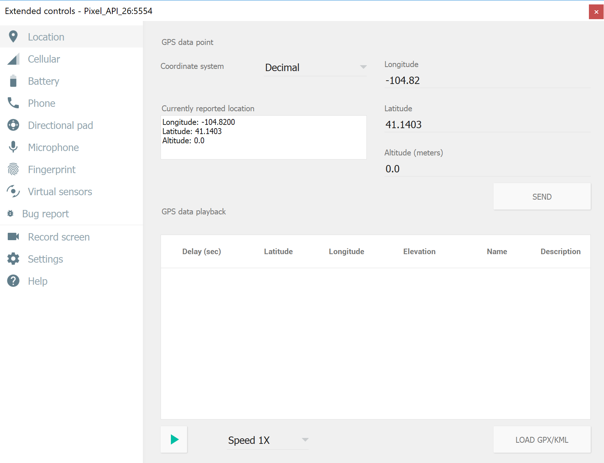

Duration
10 minutes
Exercise goals
In this exercise you will use the LocationManager to track the current location, using a marker to display it on the map. The marker will be "live" and track with changes made to the location on the device or emulator. If you use the instructions, your display will look something like:
To complete this exercise, you will perform the following steps:
-
Obtain the
LocationManagersingleton and register for location updates, passing the activity instance as the handler. -
Implement the
ILocationListenerinterface on theMainActivity. -
In the
OnLocationChangedoverride, position the camera to the passed location and add a marker (or move the existing marker).
Required Assets
There is a Exercise 2 folder included with this exercise which contains a completed project if you'd like to compare your work, or use as a starter for future exercises if you want to explore and deviate from these instructions. Remember you will need to add your Google API key to the GoogleMapsKey.cs file if you want to run this code.
Steps
Use the following steps along with the above high-level instructions to complete the exercise.
Request Location updates
As a first step, we will access the built-in LocationManager and request location updates.
-
Open the MainActivity.cs file and locate the
OnMapReadymethod. This is called when the map has been loaded and is ready to be displayed in our fragment. This is where we will request location updates. -
At the end of the method, obtain the
LocationManagerinstance either usingGetSystemServiceor through the wrapper methodLocationManager.FromContext. Both require you to pass the currentContext- you can just pass the activity instance (this). -
Call the
RequestLocationUpdatesmethod to register for location change updates.- Pass
LocationManager.GpsProvideras the location provider (1st parameter). - Pass "5000" for the
minTimevalue. This is 5 seconds. - Pass "100f" for the
minDistancevalue. This is 100 meters. - Pass the activity instance (
this) as theILocationListener, we'll implement that in a moment.
- Pass
Implement ILocationListener
Next, let's implement the ILocationListener interface on our activity - we could put this implementation anywhere we like, but the handling activity is the most common place to work with the notification.
-
Add
ILocationListenerto the list of interfaces theMainActivityimplements. Use the refactoring contextual menu to implement the interface for you (right-click on the interface and select "Implement Interface"). -
The only method we will use today is the
OnLocationChangedwhich is the notification method. In that method, we want to reposition our camera to the passed location. -
Since we need to implement the full
ILocationListenerinterface but are not concerned with their execution, make sure you delete anyNotImplementedExceptioncode in these methods that Visual Studio may have added for us. -
Move the code which changes the camera position to focus on Xamarin HQ from
OnMapReadytoOnLocationChanged. -
Change the coordinate to be the one found in the passed
Locationobject—it's two separatedoublefields,LatitudeandLongitude. Fill in aLatLngwith these values and use that coordinate to animate the camera. -
Add a new field to the class of type
Marker. Name it currentLocationMarker. -
After you have animated the camera position, check the currentLocationMarker field against
null. If it's notnull, change thePositionproperty to theLatLngyou just created. -
If it is
null, we need to create a new marker to place on the map and assign the field—this is the first time through. -
Create a new
MarkerOptionsobject and use the fluent API to set the following values:-
Use
SetIconto set the marker to be a blue default marker (BitmapDescriptorFactory.DefaultMarker(BitmapDescriptorFactory.HueBlue)). -
Use
SetPositionto set it's position to theLatLngyou created. -
Use the
SetTitleandSetSnippetmethods to set a title and description on it—this exercise will set it to "Current Position" and "This is where you are now", but feel free to set it to whatever you prefer.
-
Use
Run the application
Finally, let's test our application changes.
- Run the application on an emulator that supports location changes. You can also use a physical device, but it's harder to see changes because you likely won't be able to move very far to trigger the change.
- The app should launch and display your current location, or the last known location to the emulator.
- If you're using a Google Android Virtual Device, you can change the location using the Extended Controls dialog which can be reaching by clicking the bottom entry on the side menu bar; the ... button. 
Summary
In this exercise, you added support to manage the current location and display the position on a map.